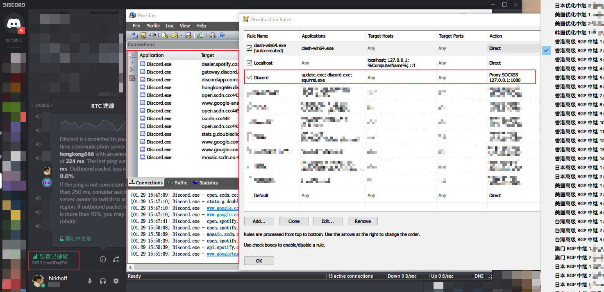
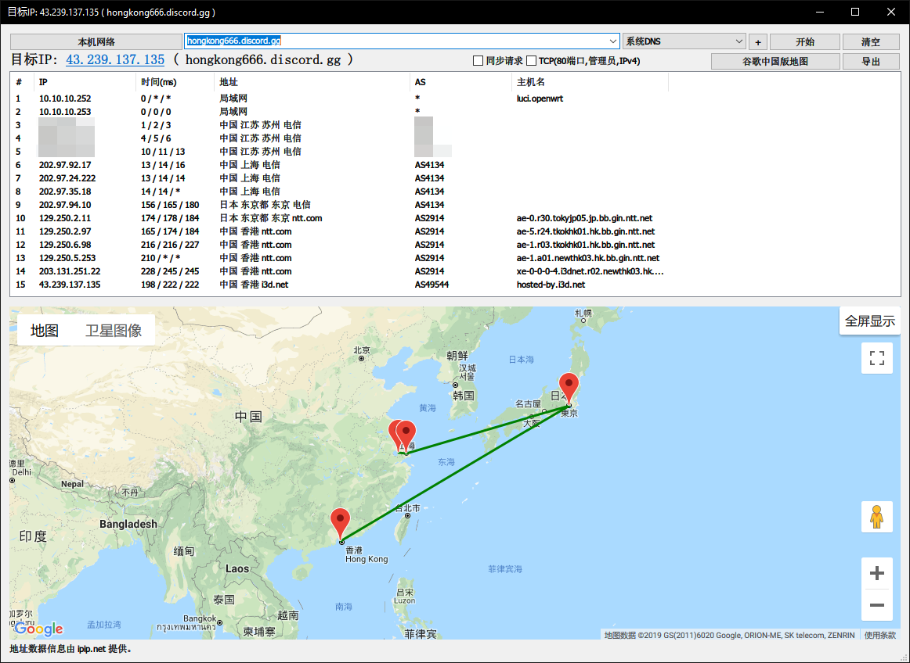

背景
- 遊玩國際多人線上遊戲的需求，追求低延遲
- 使用國際網路資源的需求，追求高速度
- 使用 Discord 的需求，追求低延遲、高穩定
分析
- 使用國際網路資源：使用 Shadowsocks 即可
- 線上遊戲：Shadowsocks 雖然也可以搭配 SSTAP 作「全局加速」，但是穩定性與延遲取決於線路品質，一般來說對於追求低延遲的 FPS 遊戲來說會很慘。因此選擇專業的網易 UU 加速器（注：加速器就是 VPN）。
- Discord：中國當地的加速器目前只有「奇游加速器」支援加速 Discord，不過奇游的線路品質個人覺得不是很穩定，因此只有 Shadowsocks 這個選擇。
做法
- 使用國際網路資源：使用 shadowsocks-windows，瀏覽器設定 SOCKS5 proxy。這取決於你的需求，這裡不多著墨。
- 線上遊戲：網易 UU 加速器
- Discord：這部分比較麻煩，我目前建議的做法是用 Discord For Windows 搭配 Proxifier + shadowcocks-windows 來完成，而且 Shadowsocks 伺服器必須要支援 UDP 轉發，而且穩定性與延遲都要夠好。我目前在使用 rixCloud 提供的 Shadowsocks 服務，所有 node 經國內伺服器中轉以保證穩定性。因價格因素，推薦公司行號或這方面需求大的人使用。本文重撰前因不夠了解 Proxifier 而推薦 ProxyCap，在這裡說聲抱歉，ProxyCap 與 UU 加速器太容易衝突了，因此不是一個好的方案。
Proxifier
先在 Proxy Servers 那邊加一下 127.0.0.1:1080 然後在 Proxification Rules 那邊設定一下 Discord 有關的應用程式全部 Proxy 就可以了。

效果
- 遊戲透過 UU 加速器大幅降低 latency 與 loss
- Discord 透過 Proxifier 再透過 SS 大幅降低 latency 與 loss 且提升穩定性
- Discord 被 GFW 封鎖的情況可以順便解決
小結
在中國想用正常的東西都蠻困難的，其實還是建議換到 Teamspeak。可以看看 http://www.ts1.cn 提供的服務，都是阿里雲上海、杭州之類的伺服器，延遲在我這裡只有 10+ ms，對我來說是非常適合……
最後附上一張直連 Discord HK RTC server 的 traceroute:
